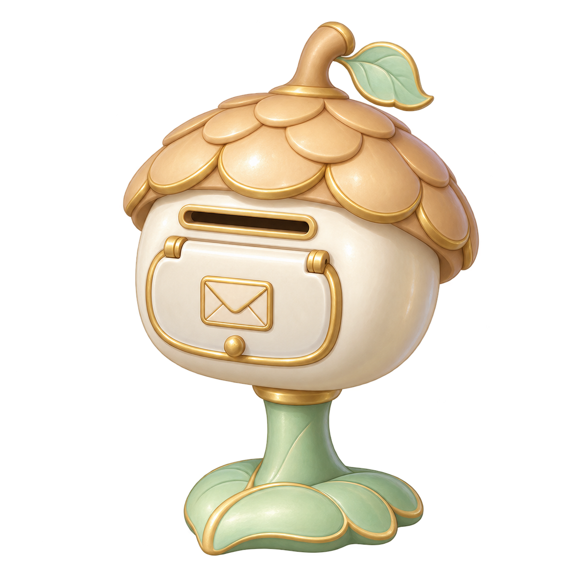

保存済みの原画をもとにしたポストの形の見本です。扉を手動で開けて内側をのぞき、裏や底も見回せます。
扉は0〜95度の範囲を手動で動かせます。閉じた状態と、開いた内側を見比べられます。
原画のある村とポストを準備しています…

参照は保存済みの同じ原画です。裏側・内側・寸法・ヒンジは、この見本のために作った構造です。手紙の投函・配達・報酬や、通常の入手・配置・保存にはつながっていません。身体の装着寸法を確認したものではありません。